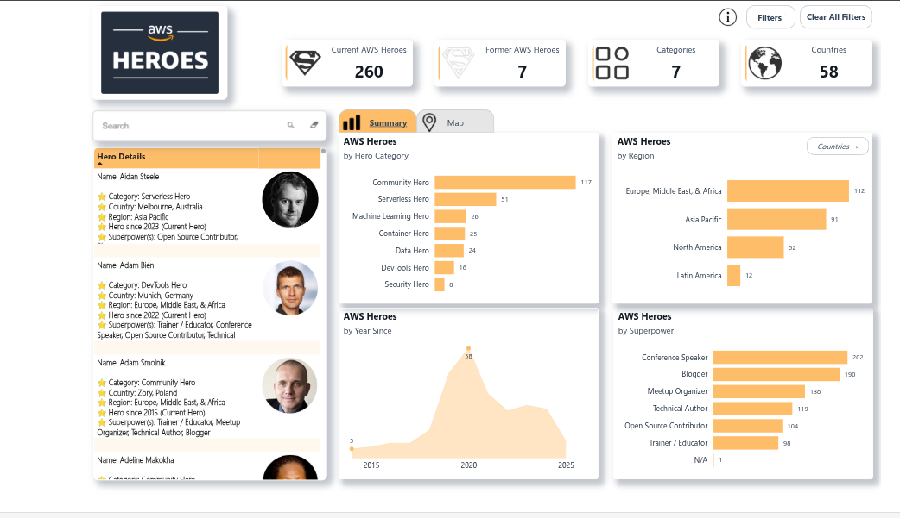

AWS Heroes Visualization
Lack of comprehensive visualization for AWS Heroes community distribution and growth trends.
Approach: Collected AWS Heroes data and created interactive Power BI dashboards with drill-down capabilities.
Outcome: Real-time dashboard showing 500+ Heroes across 50+ countries with regional insights and community growth metrics.
Power BI
Python
AWS